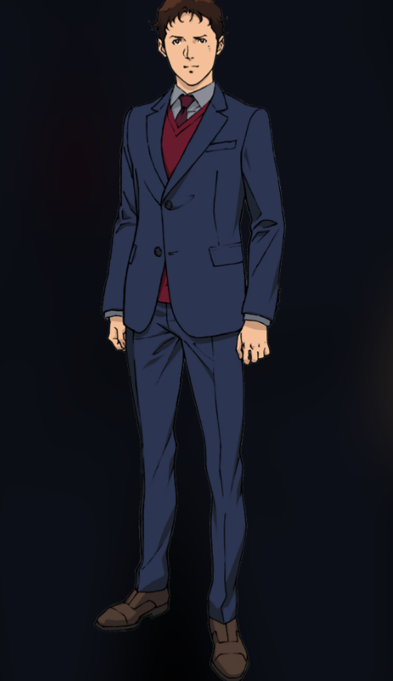
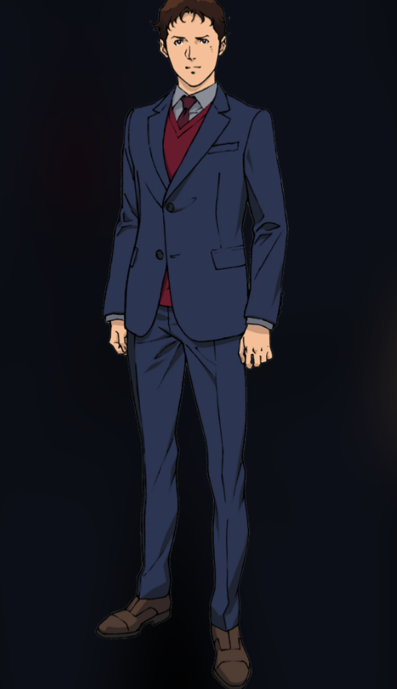

Mafty Rebellion (UC 0105)
Hathaway’s Flash depicts the Mafty Rebellion, led by Hathaway Noa against the corrupt Earth Federation. The conflict highlights growing unrest in the colonies and the tension between those on Earth and space-born citizens. New characters like Hathaway and Gigi Andalucia emerge, while veterans such as Bright Noa provide continuity. Advanced mobile suits like the RX-105 Ξ (Xi) Gundam showcase cutting-edge psycommu systems and atmospheric combat capabilities.
New Characters Introduced
- Hathaway Noa – Undercover leader of Mafty.
- Gigi Andalucia – Mafty supporter and pilot.
- Kenneth Sleg – Newly appointed Commander of the circe unit.
Returning Characters
- Bright Noa – Federation officer and Hathaway’s former ally.
Mobile Suit Advancements
- RX-105 Ξ Gundam – Advanced Federation mobile suit with psycommu and atmospheric capabilities.
- Other Federation prototypes – Experimental designs for next-gen combat.

 
